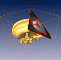
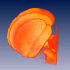
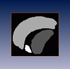
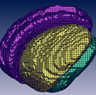
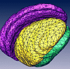

These demos illustrates how to reconstruct geometric models from 3D image data. Usually, the image data first will be visualized using a slicing module or by an isosurface. Another visualization technique comprises direct volume rendering. In most cases thorough interactive segmentation is required to extract the objects of interest. This step yields a 3D array of labels, one label for each voxel. The labeled volume may be resampled in order to accelerate computation. High-resolution non-manifold surfaces are obtained using the SurfaceGen module. The resulting surfaces may be further simplified using the simplification editor.
 Slice and isosurface
 Direct volume rendering
 Image segmentation
 Surface reconstruction
 Surface simplification